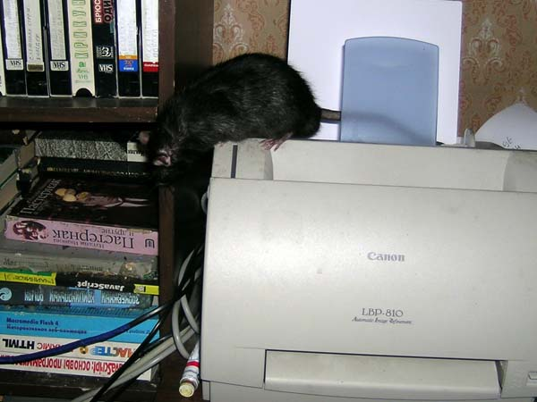

Джет Сильвер
Июнь 2005
— Вот сижу, смотрю, чтобы никто больше книгу не грыз! А что?

— А что еще есть послушать?

— Да уж, ну и бардак у вас... Зато мягко прыгать!

— Я не понял, вы что — действительно Пастернака читаете?!
— Никак по запаху не пойму, что тут на сидюке записано...